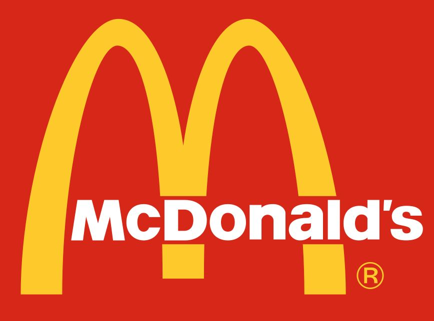
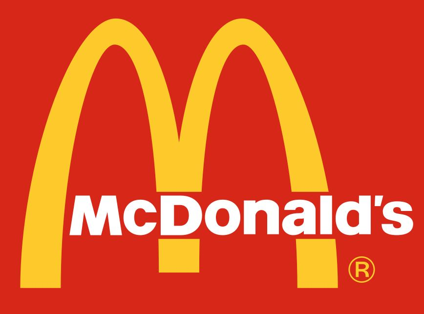

About Me
Hi there! I'm Cory Black, a professional soccer freestyle performer with 13 years of freestyling and 9 years of juggling experience. From dazzling formal stage performances in artistic shows to injecting energy into corporate events and parties, I bring a unique blend of skill and entertainment.
Having collaborated with renowned companies like the Seattle Sounders and McDonald's, and adding a touch of freestyle magic to Gala events, I bring a dynamic presence to every project.
Ready to infuse your show, project, or commercial with freestyle flair? Don't hesitate to reach out!
My Freestyle Journey
Embark on a visual journey through my years of freestyling. Check out the gallery below to witness some of my most memorable performances and behind-the-scenes moments.
Basel Ball Freestyle Competition - Top 8
Dec. 8-9, 2023 | Miami, Florida

Sounders Rave Foundation - Pitch Opening Performance
Sept. 28, 2023 | Renton, Washington
Super Ball World Freestyle Football Championships
Aug. 6-11, 2023 | Prague, Czech Republic
King of Swing Performance - Yesler Community Center
May 31, 2023 | Seattle, Washington
Mondo Fest Gala Show Performance
Mar. 4, 2023 | St. Paul Minnesota

Foreign Jam III Freestyle Competition - Top 8
Jan. 27-29, 2023 | San Diego, California

Basel Ball Freestyle Competition - Top 8
Dec. 3-4, 2022 | Miami, Florida
Super Ball World Freestyle Football Championships
Aug. 7-13, 2022 | Prague, Czech Republic

WFFA US Open Freestyle Championships - Top 16
July 2-3, 2022 | Daytona, Florida

Seattle Sounders FC - Pregame Entertainment
Summer 2021 | Seattle, Washington
Collaborations
Take a look at some of the companies I've had the pleasure of working with. Each logo represents a unique collaboration and memorable experience.
 

Stay Connected
Follow me on Instagram to stay updated on my latest freestyle soccer performances and behind-the-scenes moments.